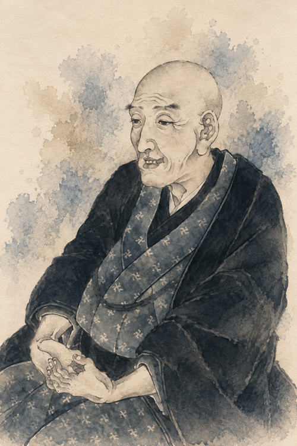

地球: NASA Blue Marble
葛飾北斎
HISTORY OS ・ FOCUS PERSON
World Events
＋ W-LINK（同時代の海外・二次表示）
Works
冨嶽三十六景（代表6図）
HISTORY OS / FOCUS PERSON

葛飾北斎
1760 — 1849
この時期の名（幼名・個人名・画号を区別）
為一
生涯
P-LINK ＋（人物関係）
選択すると Timeline に生涯バーを重ねて比較（時間範囲は変えない）。もう一度で解除。
1831
富嶽三十六景 刊行期
＋
－
NOW →(将来)
ドラッグ=カーソル移動 ／ 背景ドラッグ=年代パン ／ ＋−=Timeline Zoom
WORLD 地球
JAPAN 日本詳細
富士山頂軸
描画視点（北斎が富士を描いた地点）
富士山
画角コーン（JAPAN／Representation）
旅行(推定Connection) / 構図軸